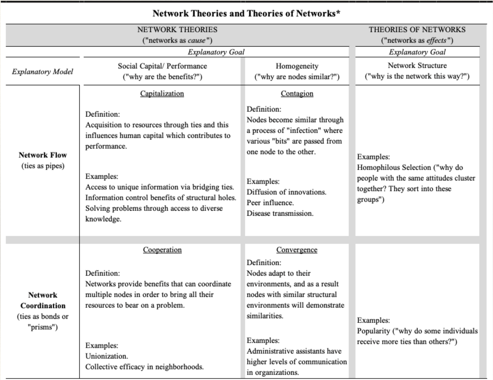

Network Theory and Theory of Networks
In the prior chapter, we reviewed why social network analysis is a valuable part of the crime analyst’s toolkit by introducing the logic of network science to help you think about research problems through a network lens. We then examined some of the building blocks of network analysis to get at the question of “what networks look like”. In this chapter, we want to spend more time examining how theory operates in projects conducted from a network perspective.
By the end of the chapter, you should be able to answer these questions:
What is the difference between an “explanatory model” and an “explanatory goal”?
How is “network theory” different from “theory of networks”?
Organizing Knowledge
As discussed in the introductory chapter, network science takes relational structures as the primary domain of interest. In so doing, research questions take the following forms:
- How does the network matter?
- Here the network is an independent variable. In the case above, the network of shared incidents was an independent variable that influenced views of body-worn cameras.
- What affects the network?
- Here, the network is a dependent variable. Do younger individuals who are involved in crime have more co-offenders?
Building from this, we can think about organizing social network analyses around the following general classification of ideas:
- Network Theories (networks as “cause”)
- Theories of Networks (networks as “effect”)
We can further classify studies based on the Explanatory Model (what is the metaphor for the network?) and the Explanatory Goal (what are we trying to explain?).
The Explanatory model differentiates between two different metaphors for what networks do: flow (where “stuff” flows through a network like a pipe) and coordination (network ties are like bonds in that they coordinate action)
The Explanatory goal differentiates between what we are trying to understand: social capital/performance (what are the benefits of a position? How does it render advantage?), homogeneity (why are nodes similar?), and network structure (why is the network like this?).
These dimensions give as a 2x3 table where to better classify studies:
We just covered A LOT of terminology and jargon. Let’s unpack each of these and work through an example.
Mechanisms in Network Theory
Capitalization
Model: Flow
Goal: Social Capital/Performance
This mechanism explains the benefits of social ties as providing resources. That is, individuals are able to capitalize on their ties, and this produces variation in resources. For example, consider the question: why do some individuals avoid recidivism upon reentry into the community after incarceration? Research on desistance highlights the critical role of social support systems in this process. Individuals who can draw on a diverse set of resources—such as employment opportunities, housing, and emotional support—from their social networks are better positioned to navigate the challenges of life post-release. A study by Visher and Travis (2003) found that those with strong, positive social ties, particularly to family and community organizations, were less likely to reoffend, as these connections facilitated access to essential resources and a sense of stability during the reintegration process. Put differently, resources flow through these relationships producing differences in individuals’ experiences with reentry.
Contagion
Model: Flow
Goal: Homogeneity
This mechanism explains homogeneity among nodes as the result of an “infection” process. That is, individuals become similar due to their exposure within their social network. For example, consider the question: why do some individuals become victims of gun violence? Research suggests that exposure to specific behavioral environments significantly increases the risk of gun violence victimization. In particular, individuals who are embedded in networks with others who have been victims of gun violence are more likely to become victims themselves. This phenomenon can be understood in epidemiological terms, where violence spreads through networks much like a contagious disease. Papachristos, Wildeman, and Roberto (2015) found that individuals’ proximity to others who have been shot dramatically increases their own likelihood of becoming a victim, illustrating the “social contagion” model of gun violence. That is, these individuals become similar (in this case victimization experience) due to the flow of violence through their network.
Cooperation
Model: Coordination
Goal: Social Capital/Performance
Ties facilitate coordination to solve collective problems. For example, why can some groups effectively enforce norms? According to Coleman (1990), network closure strengthens group identity and distributes the costs of sanctioning, allowing groups with these properties to maintain social control. In the context of crime, Papachristos (2009) argues that criminal groups, such as gangs, can enforce norms and regulate violence within their territories through network closure and strong internal ties. These groups rely on social capital built from dense, closed networks, which allows them to effectively coordinate behaviors, sanction rule-breakers, and maintain order within their communities.
Convergence
Model: Coordination
Goal: Homogeneity
Nodes respond to or adapt to their environment, and homogeneity is often a consequence of this structural similarity. For example, who is most likely to engage in relational violence? Research suggests that adolescents in the middle of the friendship hierarchy (not at the top or bottom) are more likely to engage in relational violence as a way to maintain their social position and navigate the hierarchy. Faris and Felmlee (2011) found that adolescents in these middle positions tend to engage in aggressive behaviors like bullying or relational violence to protect or improve their social standing. Similarly, in gang networks, mid-ranking members—those not at the top of the leadership structure but not at the bottom—are often the ones most likely to engage in violent behaviors. According to Densley (2012), gang members in this mid-tier position often use violence as a strategy to solidify their standing within the group and prove their loyalty to more senior members, thereby navigating the social hierarchy within the gang.
Theories of Networks
Network Theory focuses on networks as an independent variable, where the network matters for some outcome. However, many studies focus on the network itself as a dependent variable, seeking to understand why a network structure exists as it does and/or how it may change as a consequence of some variable (e.g. an intervention). These studies usually adopt one of the metaphors (i.e. network flow or network coordination) to address the question, “why is the network this way?” For example, Bright and Delaney (2013) examine the evolution of a drug trafficking network, analyzing how its structure and function shifted as a result of external pressures such as law enforcement interventions. In this example, the network’s evolution is treated as the dependent variable, highlighting the impact of these forces on its adaptability and resilience. Similarly, Rostami and Mondani (2015) focus on the complexity of crime network data, investigating how network structure, centrality, and cohesiveness change over time. They also consider how interventions, such as law enforcement actions, influence these changes. Both studies illustrate how thinking of the network as a dependent variable offers valuable insights into the adaptability and transformation of networks under various pressures, emphasizing the role of external interventions in shaping network dynamics.
Putting it all together
The table below summarizes the major approaches to organizing social network analyses:
Test Your Knowledge
In a few words, how would you describe the difference between “network theories” and “theories of networks”?
Think of a study examining criminal networks. What is the explanatory “model”? What is the explanatory “goal”?
In a study by Carley, Lee, and Krackhardt (2002), the authors examined the structure and evolution of the Al Qaeda terrorist network. They identified key nodes and relationships within the network, showing how the removal of certain individuals would impact the network’s operational efficiency and adaptability. What are the metaphor(s) used in this example?
Walker, Wasserman, and Wellman (2019), examined how social networks of police officers influenced patterns of misconduct in the Chicago Police Department. They found that officers who were connected to others with histories of misconduct were more likely to engage in similar behavior, demonstrating how network ties can perpetuate unethical practices within law enforcement. What are the metaphor(s) used in this example?
What is the ‘social contagion’ model of gun violence, and how does it explain victimization patterns?
How does the hierarchical position of individuals within social networks influence their likelihood of engaging in violence, such as in gang networks?
How can external pressures, such as law enforcement interventions, impact the structure and adaptability of criminal networks over time?
Summary
In this chapter we focused on the role of theory in understanding networks. Specifically, we distinguished between “network theories” (which consider networks as a cause) and “theories of networks” (which view networks as an effect). Studies can be classified based on their explanatory model (how networks operate, such as flow or coordination) and their explanatory goal (what the study aims to explain, like social capital or homogeneity). Mechanisms like capitalization, contagion, cooperation, and convergence further explain how networks function in various contexts, such as criminal behavior and social control.
In the next chapter, we will examine how network data are collected.